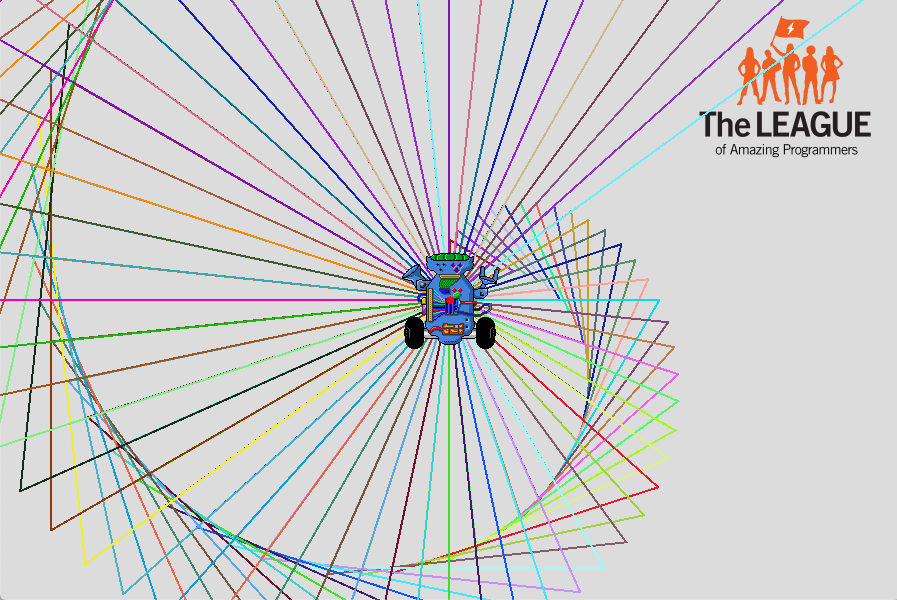
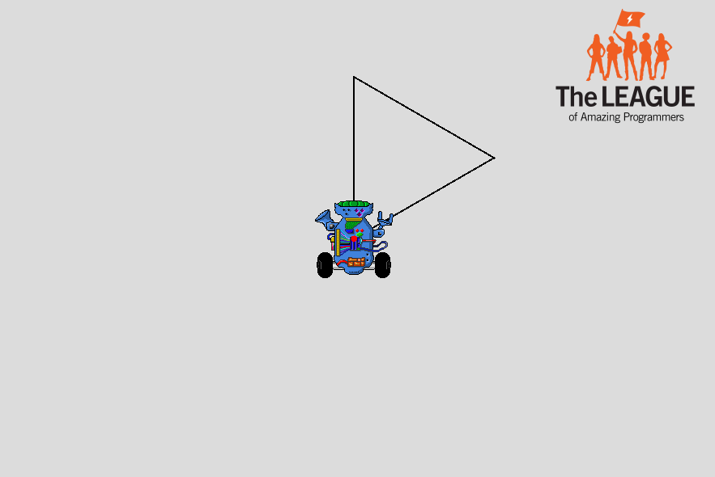

Triangle Shell

Goal:
Use int variables and a loop to draw a pattern with triangles.
Steps:
- Find the Triangle Shell recipe program ( TriangleShell.java ) and open it using Eclipse.
- Follow the instructions in the program to draw the pattern.
- The first time you run the program, it should look like this
- After you add all the triangles, it should look something like this